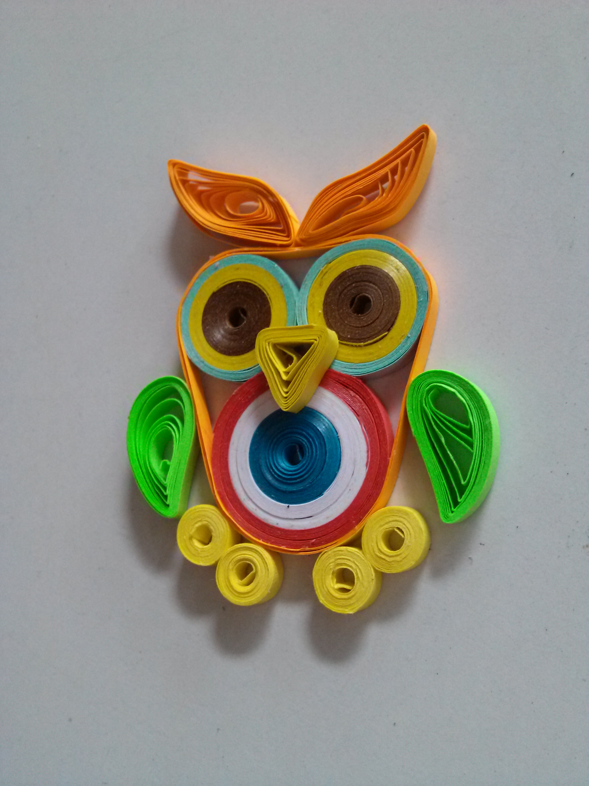

My hands doesn't have a talent to make beautiful handwritings nor drawings but there's something in me that pushes me to be involved and love the field of arts. Way back in Elementary and in High School, I was called a meticulous person by my classmates and some of my teachers. It is because my school projects are carefully made and I humbly say some of them are pretty aesthetic. They all knew I got a bad handwriting but in making some works that doesn't include writing, I am having a hard time just to fill my contentment in in my project outcomes. There were times that we are required to do some stuffs in a bond paper with a border on each paper. My style is to measure the sides of the paper, put some little dots for tracing, measuring again just to make sure the dots are proportional to each other and then trace the border. After making some borders, I looked around and watched my classmates doing halfway of their work. Yet here I am, so frustrated why some of the paper aren’t perfectly cut and its ruining my almost perfect border. Yes I am one of the people who has a self-diagnosed OCD or Obsessive Compulsive Disorder. No, I am not that kind of a person who is a perfectionist in every way. Although there’s a minimal presence of the OCD symptoms, it doesn’t work on everything I do… just on some things that I know that I can be competent about or just to fill my satisfaction.
In my arts class just a few semesters ago, we were obliged to do some arts. I am pretty sure that I am not gifted to make some good sketches or paintings and I already accepted that. One of the artworks we need do is food carving. I made a turtle out of a green apple and one of my classmates copied my idea. We talked a day before that my plan is a green apple turtle and he said he’s going to copy mine because he doesn’t have any idea what to do for tomorrow. I’m so irritated as I thought he was just joking around because in the class, he is known to be a good artist in drawing and in digital arts, so he must have an idea in his brain on what’s he going to do to show his skills. Now, what happened next was a little revelation of which person made the better apple turtle. Our professor roams around to check that everybody is doing something and she noticed that I and the other guy is making the same thing. My opponent finished first but when our professor checks mine after I finished, she was so astounded that my turtle has finer details. She complemented me and asked me many times how I did my clean cuts on the apple’s skin. I don’t know what to answer so I just smiled. But in my mind I was thinking that it was just a touch of my anxiety.
Another activity we did in the arts class is to make something that is unique and to explain in class of what was the meaning of our arts. “A handicraft!” I shouted in my mind. I decided to make something out of colored papers. I searched and found the Paper Quilling Art. It is an art that uses paper strips that are rolled, shaped, and glued together to create decorative designs. What I made is this cute little owl that is just about 2 inches tall.

Our arts proffesor said that each of us will go in front and present it in front of her. I went to her table and showed my work. She was dismayed that we ain't got enough time to present my work in the class. At that time, everything in the news was the bombing incident in France. I explained to her that the owl symbolizes wisdom, strategy, and has the strength to face the shadows. But what’s the connection? The colors of the belly of the owl are the colors of the French flag. It means that the spirit of an owl carries the French community to endure the tragic event. If I wasn't mistaken, I got a perfect score for this one.